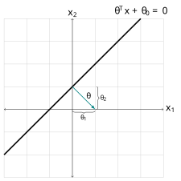
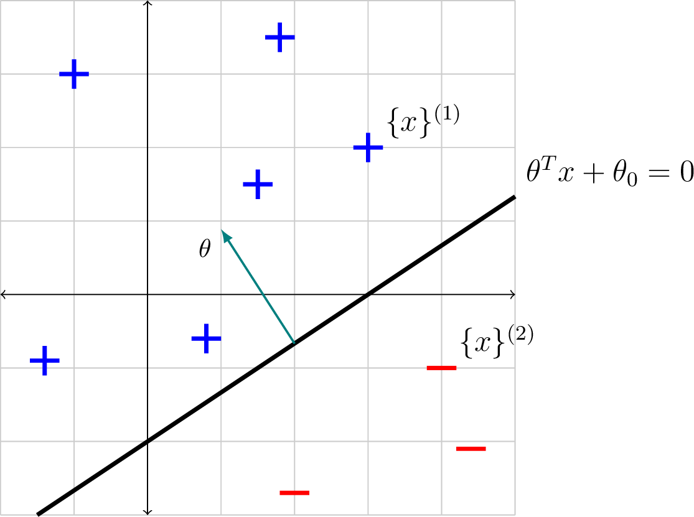
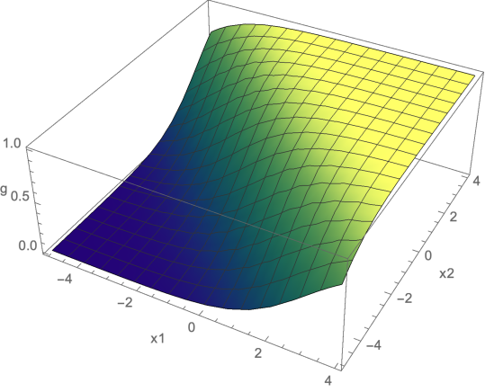
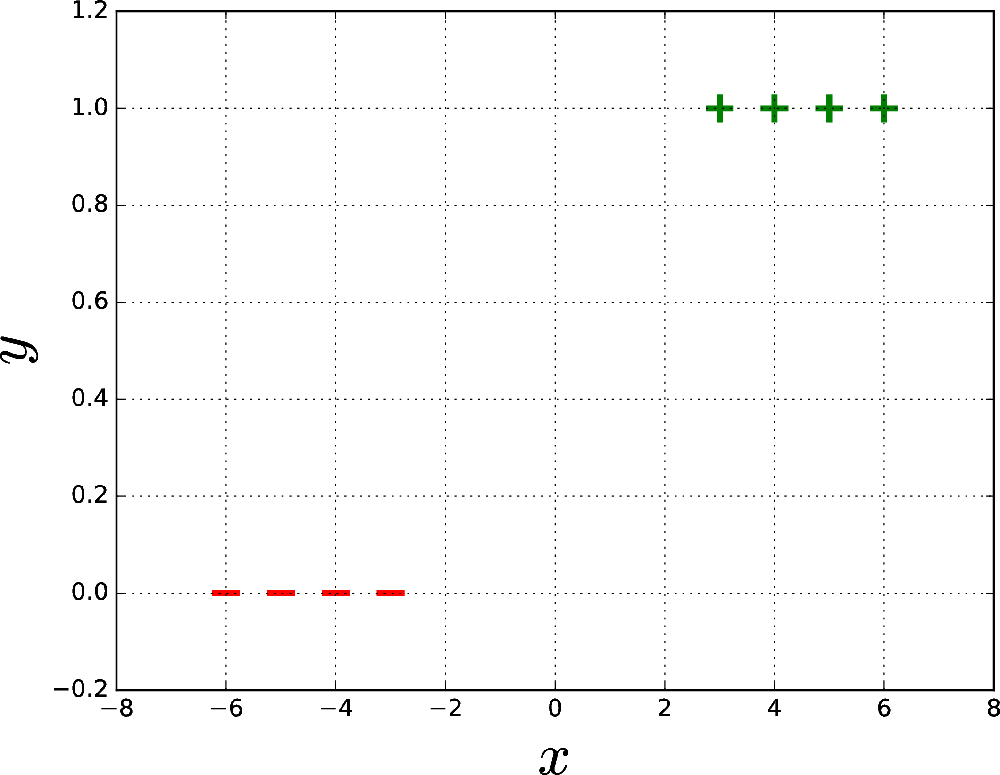
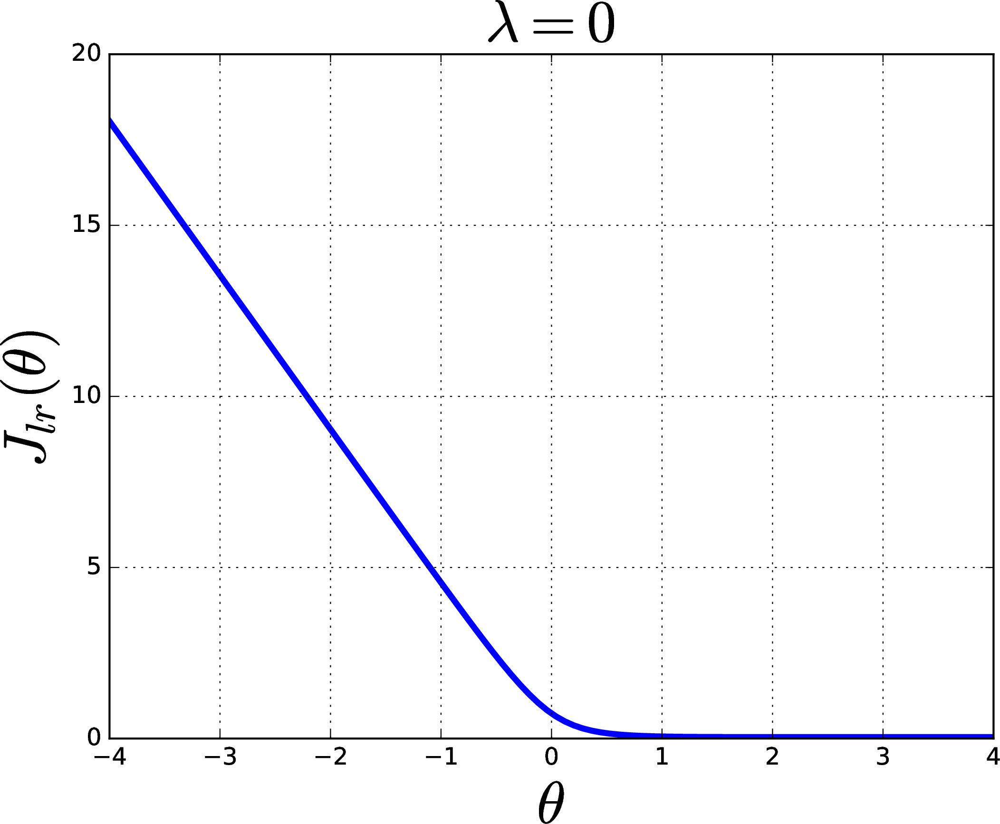
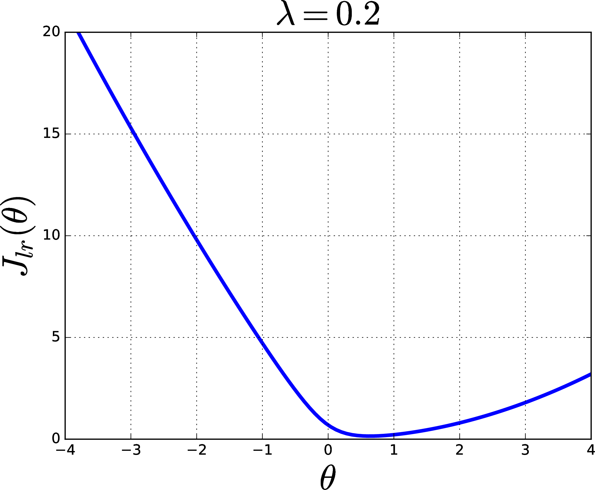

MIT 6.390 Intro to Machine Learning: 4 Classification (Repost)
Reposted from Chapter 4: Classification of the MIT 6.390 Intro to Machine Learning course notes, © Massachusetts Institute of Technology and the 6.390 (formerly 6.036) course staff, licensed under CC BY-NC-SA 4.0. Changes made on 2026-11-20: converted from the course website to Markdown; side notes and boxed notes shown as quotes; links to other chapters point to the original site; the interactive demo linked instead of embedded. This post is shared under the same license.
4.1 Problem formulation
Classification is a machine learning problem seeking to map from inputs \(\mathbb{R}^d\) to outputs in an unordered set.
This is in contrast to a continuous real-valued output, as we saw for linear regression.
Examples of classification output sets could be \(\{\text{apples}, \text{oranges}, \text{pears}\}\) if we’re trying to figure out what type of fruit we have, or \(\{\text{heart attack}, \text{no heart attack}\}\) if we’re working in an emergency room and trying to give the best medical care to a new patient. We focus on an essential simple case, binary classification, where we aim to find a mapping from \(\mathbb{R}^d\) to two outputs. While we should think of the outputs as not having an order, it’s often convenient to encode them as \(\{0, 1\}\). As before, let the letter \(h\) (for hypothesis) represent a classifier, so the classification process looks like: \[x \rightarrow \boxed{h} \rightarrow y \;\;.\]
Like regression, classification is a supervised learning problem, in which we are given a training data set of the form
\[{\cal D}_{\text{train}} = \left\{\left(x^{(1)}, y^{(1)}\right), \dots, \left(x^{(n)}, y^{(n)}\right)\right\} \;\;. \]
We will assume that each \(x^{(i)}\) is a \(d \times 1\) column vector. The intended use of this data is that, when given an input \(x^{(i)}\), the learned hypothesis should generate output \(y^{(i)}\).
What makes a classifier useful? As in regression, we want it to work well on new data, making good predictions on examples it hasn’t seen. But we don’t know exactly what data this classifier might be tested on when we use it in the real world. So, we have to assume a connection between the training data and testing data; typically, they are drawn independently from the same probability distribution.
In classification, we will often use 0-1 loss for evaluation (as discussed in Section 1.3). For that choice, we can write the training error and the testing error. In particular, given a training set \({\cal D}_{\text{train}}\) and a classifier \(h\), we define the training error of \(h\) to be
\[ \begin{aligned} \mathcal{E}_{\text{train}}(h) = \frac{1}{n}\sum_{i = 1}^{n}\begin{cases} 1 & h(x^{(i)}) \ne y^{(i)} \\ 0 & \text{otherwise}\end{cases} \;\;. \end{aligned} \tag{4.1}\]
For now, we will try to find a classifier with small training error (later, with some added criteria) and hope it generalizes well to new data, and has a small test error
\[ \begin{aligned} \mathcal{E}_{\text{test}}(h) = \frac{1}{n'}\sum_{i = n + 1}^{n + n'}\begin{cases} 1 & h(x^{(i)}) \ne y^{(i)} \\ 0 & \text{otherwise}\end{cases} \end{aligned} \] on \(n'\) new examples that were not used in the process of finding the classifier.
We begin by introducing the hypothesis class of linear classifiers (Section 4.2) and then define an optimization framework to learn linear logistic classifiers (Section 4.3).
4.2 Linear classifiers
We start with the hypothesis class of linear classifiers. They are (relatively) easy to understand, simple in a mathematical sense, powerful on their own, and the basis for many other more sophisticated methods. Following their definition, we present a simple learning algorithm for classifiers.
4.2.1 Linear classifiers: definition
A linear classifier in \(d\) dimensions is defined by a vector of parameters \(\theta \in \mathbb{R}^d\) and scalar \(\theta_0 \in \mathbb{R}\). So, the hypothesis class \({\cal H}\) of linear classifiers in \(d\) dimensions is parameterized by the set of all vectors in \(\mathbb{R}^{d+1}\). We’ll assume that \(\theta\) is a \(d \times 1\) column vector.
Given particular values for \(\theta\) and \(\theta_0\), the classifier is defined by \[\begin{aligned} h(x; \theta, \theta_0) = \text{step}(\theta^T x + \theta_0) = \begin{cases} +1 & \text{if $\theta^Tx + \theta_0 > 0$} \\ 0 & \text{otherwise}\end{cases} \;\;. \end{aligned} \]
Remember that we can think of \(\theta, \theta_0\) as specifying a \(d\)-dimensional hyperplane (compare the above with Equation 2.3). But this time, rather than being interested in that hyperplane’s values at particular points \(x\), we will focus on the separator that it induces. The separator is the set of \(x\) values such that \(\theta^T x + \theta_0 = 0\). This is also a hyperplane, but in \(d-1\) dimensions! We can interpret \(\theta\) as a vector that is perpendicular to the separator. (We will also say that \(\theta\) is normal to the separator.)
Below is an embedded demo illustrating the separator and normal vector. Open demo in full screen.
Demo: Linear classifier separator
For example, in two dimensions (\(d=2\)) the separator has dimension 1, which means it is a line, and the two components of \(\theta = [\theta_1, \theta_2]^T\) give the orientation of the separator, as illustrated in the following example.
4.2.2 Linear classifiers: examples
Example:
Let \(h\) be the linear classifier defined by \(\theta = \begin{bmatrix} 1 \\ -1 \end{bmatrix}, \theta_0 = 1\). The diagram below shows the \(\theta\) vector (in green) and the separator it defines:

What is \(\theta_0\)? We can solve for it by plugging a point on the line into the equation for the line. It is often convenient to choose a point on one of the axes, e.g., in this case, \(x=[0, 1]^T\), for which \(\theta^T \left[ \begin{array}{c} 0 \\ 1 \end{array} \right] + \theta_0 = 0\), giving \(\theta_0 = 1\).
In this example, the separator divides \(\mathbb{R}^d\), the space our \(x^{(i)}\) points live in, into two half-spaces. The one that is on the same side as the normal vector is the positive half-space, and we classify all points in that space as positive. The half-space on the other side is negative and all points in it are classified as negative.
Note that we will call a separator a linear separator of a data set if all of the data with one label falls on one side of the separator and all of the data with the other label falls on the other side of the separator. For instance, the separator in the next example is a linear separator for the illustrated data. If there exists a linear separator on a dataset, we call this dataset linearly separable.
Example:
Let \(h\) be the linear classifier defined by \(\theta = \begin{bmatrix} -1 \\ 1.5 \end{bmatrix}, \theta_0 = 3\).
The diagram below shows several points classified by \(h\). In particular, let \(x^{(1)} = \begin{bmatrix} 3 \\ 2 \end{bmatrix}\) and \(x^{(2)} = \begin{bmatrix} 4 \\ -1 \end{bmatrix}\). \[\begin{aligned} h(x^{(1)}; \theta, \theta_0) & = \text{step}\left(\begin{bmatrix} -1 & 1.5 \end{bmatrix}\begin{bmatrix} 3 \\ 2 \end{bmatrix} + 3\right) = \text{step}(3) = +1 \\ h(x^{(2)}; \theta, \theta_0) & = \text{step}\left(\begin{bmatrix} -1 & 1.5 \end{bmatrix}\begin{bmatrix} 4 \\ -1 \end{bmatrix} + 3\right) = \text{step}(-2.5) = 0 \end{aligned}\]
Thus, \(x^{(1)}\) and \(x^{(2)}\) are given positive (label +1) and negative (label 0) classifications, respectively.

Study Question: What is the green vector normal to the separator? Specify it as a column vector.
Study Question: What change would you have to make to \(\theta, \theta_0\) if you wanted to have the separating hyperplane in the same place, but to classify all the points labeled ‘+’ in the diagram as negative and all the points labeled ‘-’ in the diagram as positive?
4.3 Linear logistic classifiers
Given a data set and the hypothesis class of linear classifiers, our goal will be to find the linear classifier that optimizes an objective function relating its predictions to the training data. To make this problem computationally reasonable, we will need to take care in how we formulate the optimization problem to achieve this goal.
For classification, it is natural to make predictions in \(\{+1, 0\}\) and use the 0-1 loss function, \(\mathcal{L}_{01}\), as introduced in Chapter 1:
\[\mathcal{L}_{01}(g, y) = \begin{cases} 0 & \text{if $g = y$} \\ 1 & \text{otherwise} \end{cases} \; . \]
However, even for simple linear classifiers, it is very difficult to find values for \(\theta, \theta_0\) that minimize simple 0-1 training error \[ J(\theta, \theta_0) = \frac{1}{n} \sum_{i=1}^n \mathcal{L}_{01}(\text{step}(\theta^Tx^{(i)} + \theta_0), y^{(i)})\;\;. \]
This problem is NP-hard, which probably implies that solving the most difficult instances of this problem would require computation time exponential in the number of training examples, \(n\).
The “probably” here is not because we’re too lazy to look it up, but actually because of a fundamental unsolved problem in computer-science theory, known as “P vs. NP.”
What makes this a difficult optimization problem is its lack of “smoothness”:
There can be two hypotheses, \((\theta, \theta_0)\) and \((\theta', \theta_0')\), where one is closer in parameter space to the optimal parameter values \((\theta^*, \theta_0^*)\), but they make the same number of misclassifications so they have the same \(J\) value.
All predictions are categorical: the classifier can’t express a degree of certainty about whether a particular input \(x\) should have an associated value \(y\).
For these reasons, if we are considering a hypothesis \(\theta,\theta_0\) that makes five incorrect predictions, it is difficult to see how we might change \(\theta,\theta_0\) so that it will perform better, which makes it difficult to design an algorithm that searches in a sensible way through the space of hypotheses for a good one. For these reasons, we investigate another hypothesis class: linear logistic classifiers, providing their definition, then an approach for learning such classifiers using optimization.
4.3.1 Linear logistic classifiers: definition
The hypotheses in a linear logistic classifier (LLC) are parameterized by a \(d\)-dimensional vector \(\theta\) and a scalar \(\theta_0\), just as is the case for linear classifiers. However, instead of making predictions in \(\{+1, 0\}\), LLC hypotheses generate real-valued outputs in the interval \((0, 1)\). An LLC has the form \[ h(x; \theta, \theta_0) = \sigma(\theta^T x + \theta_0)\;\;. \] This looks familiar! What’s new?
The logistic function, also known as the sigmoid function, is defined as \[ \sigma(z) = \frac{1}{1+e^{-z}}\;\;, \] and is plotted below, as a function of its input \(z\). Its output can be interpreted as a probability, because for any value of \(z\) the output is in \((0, 1)\).

Study Question: Convince yourself the output of \(\sigma\) is always in the interval \((0, 1)\). Why can’t it equal 0 or equal 1? For what value of \(z\) does \(\sigma(z) = 0.5\)?
4.3.2 Linear logistic classifier: examples
What does an LLC look like? Let’s consider the simple case where \(d = 1\), so our input points simply lie along the \(x\) axis. Classifiers in this case have dimension \(0\), meaning that they are points. The plot below shows LLCs for three different parameter settings: \(\sigma(10x + 1)\), \(\sigma(-2x + 1)\), and \(\sigma(2x - 3).\)

Study Question: Which plot is which? What governs the steepness of the curve? What governs the \(x\) value where the output is equal to 0.5?
But wait! Remember that the definition of a classifier is that it’s a mapping from \(\mathbb{R}^d \rightarrow \{+1, 0\}\) or to some other discrete set. So, then, it seems like an LLC is actually not a classifier!
Given an LLC, with an output value in \((0, 1)\), what should we do if we are forced to make a prediction in \(\{+1, 0\}\)? A default answer is to predict \(+1\) if \(\sigma(\theta^T x + \theta_0) > 0.5\) and \(0\) otherwise. The value \(0.5\) is sometimes called a prediction threshold.
In fact, for different problem settings, we might prefer to pick a different prediction threshold. The field of decision theory considers how to make this choice. For example, if the consequences of predicting \(+1\) when the answer should be \(0\) are much worse than the consequences of predicting \(0\) when the answer should be \(+1\), then we might set the prediction threshold to be greater than \(0.5\).
Study Question: Using a prediction threshold of 0.5, for what values of \(x\) do each of the LLCs shown in the figure above predict \(+1\)?
When \(d = 2\), then our inputs \(x\) lie in a two-dimensional space with axes \(x_1\) and \(x_2\), and the output of the LLC is a surface, as shown below, for \(\theta = (1, 1), \theta_0 = 2\).

Study Question: Convince yourself that the set of points for which \(\sigma(\theta^T x + \theta_0) = 0.5\), that is, the ``boundary’’ between positive and negative predictions with prediction threshold \(0.5\), is a line in \((x_1, x_2)\) space. What particular line is it for the case in the figure above? How would the plot change for \(\theta = (1, 1)\), but now with \(\theta_0 = -2\)? For \(\theta = (-1, -1), \theta_0 = 2\)?
4.3.3 Learning linear logistic classifiers
Optimization is a key approach to solving machine learning problems; this also applies to learning linear logistic classifiers (LLCs) by defining an appropriate loss function for optimization. A first attempt might be to use the simple 0-1 loss function \(\mathcal{L}_{01}\) that gives a value of 0 for a correct prediction, and a 1 for an incorrect prediction. As noted earlier, however, this gives rise to an objective function that is very difficult to optimize, and so we pursue another strategy for defining our objective.
For learning LLCs, we’d have a class of hypotheses whose outputs are in \((0, 1)\), but for which we have training data with \(y\) values in \(\{+1, 0\}\). How can we define an appropriate loss function? We start by changing our interpretation of the output to be the probability that the input should map to output value 1 (we might also say that this is the probability that the input is in class 1 or that the input is ‘positive.’)
Study Question: If \(h(x)\) is the probability that \(x\) belongs to class \(+1\), what is the probability that \(x\) belongs to the class \(-1\), assuming there are only these two classes?
Intuitively, we would like to have low loss if we assign a high probability to the correct class. We’ll define a loss function, called negative log-likelihood (NLL), that does just this. In addition, it has the cool property that it extends nicely to the case where we would like to classify our inputs into more than two classes.
In order to simplify the description, we assume that (or transform our data so that) the labels in the training data are \(y \in \{0, 1\}\).
Remember to be sure your \(y\) values have this form if you try to learn an LLC using NLL!
We would like to pick the parameters of our classifier to maximize the probability assigned by the LLC to the correct \(y\) values, as specified in the training set. Letting \(g^{(i)} = \sigma(\theta^Tx^{(i)} + \theta_0)\), that probability is
That crazy huge \(\Pi\) represents taking the product over a bunch of factors just as huge \(\Sigma\) represents taking the sum over a bunch of terms.
\[ \prod_{i = 1}^n \begin{cases} g^{(i)} & \text{if $y^{(i)} = 1$} \\ 1 - g^{(i)} & \text{otherwise} \end{cases}\;\;, \] under the assumption that our predictions are independent. This can be cleverly rewritten, when \(y^{(i)} \in \{0, 1\}\), as \[ \prod_{i = 1}^n {g^{(i)}}^{y^{(i)}}(1 - g^{(i)})^{1 - y^{(i)}}\;\;. \]
Study Question: Be sure you can see why these two expressions are the same.
The big product above is kind of hard to deal with in practice, though. So what can we do? Because the log function is monotonic, the \(\theta, \theta_0\) that maximize the quantity above will be the same as the \(\theta, \theta_0\) that maximize its log, which is the following: \[ \sum_{i = 1}^n \left( {y^{(i)}}\log {g^{(i)}} + (1 - y^{(i)})\log(1 - g^{(i)})\right)\;\;. \]
Finally, we can turn the maximization problem above into a minimization problem by taking the negative of the above expression, and writing in terms of minimizing a loss \[ \sum_{i = 1}^n \mathcal{L}_\text{nll}(g^{(i)}, y^{(i)}) \] where \(\mathcal{L}_\text{nll}\) is the negative log-likelihood loss function:
\[ \mathcal{L}_\text{nll}(\text{guess},\text{actual}) = -\left(\text{actual}\cdot \log (\text{guess}) + (1 - \text{actual})\cdot\log (1 - \text{guess})\right) \;\;. \]
In symbols, with \(g\) for the guess and \(y\) for the actual label, \[ \mathcal{L}_\text{nll}(g, y) = -\left(y \log g + (1 - y)\log(1 - g)\right) \;\;. \]
This loss function is also sometimes referred to as the log loss or cross entropy.
The choice of log base doesn’t make any real difference here. When we ask you for numbers, use log base \(e\) (i.e., \(\ln\)).
What is the objective function for linear logistic classification? We can finally put all these pieces together and develop an objective function for optimizing regularized negative log-likelihood for a linear logistic classifier. In fact, this process is usually called “logistic regression.” Since the objective is the average NLL loss plus the same ridge penalty as in Section 2.7.2, we’ll call it \(J_{\text{nll-ridge}}\), and define it as \[ J_{\text{nll-ridge}}(\theta, \theta_0; {\cal D}) = \left(\frac{1}{n} \sum_{i=1}^n \mathcal{L}_\text{nll}(\sigma(\theta^T x^{(i)} + \theta_0), y^{(i)})\right) + \lambda \left\lVert\theta\right\rVert^2\;\;. \tag{4.2}\]
Study Question: Consider the case of linearly separable data. What will the \(\theta\) values that optimize this objective be like if \(\lambda = 0\)? What will they be like if \(\lambda\) is very big? Try to work out an example in one dimension with two data points.
What role does regularization play for classifiers? This objective function has the same structure as the one we used for regression, Equation 2.2, where the first term (in parentheses) is the average loss, and the second term is for regularization. Regularization is needed for building classifiers that can generalize well (just as was the case for regression). The parameter \(\lambda\) governs the trade-off between the two terms as illustrated in the following example.
Suppose we wish to obtain a linear logistic classifier for this one-dimensional dataset:

Clearly, this can be fit very nicely by a hypothesis \(h(x)=\sigma(\theta x)\), but what is the best value for \(\theta\)? Evidently, when there is no regularization (\(\lambda=0\)), the objective function \(J_{\text{nll-ridge}}(\theta)\) will approach zero for large values of \(\theta\), as shown in the plot on the left, below. However, would the best hypothesis really have an infinite (or very large) value for \(\theta\)? Such a hypothesis would suggest that the data indicate strong certainty that a sharp transition between \(y=0\) and \(y=1\) occurs exactly at \(x=0\), despite the actual data having a wide gap around \(x=0\).


In absence of other beliefs about the solution, we might prefer that our linear logistic classifier not be overly certain about its predictions, and so we might prefer a smaller \(\theta\) over a large \(\theta.\) By not being overconfident, we might expect a somewhat smaller \(\theta\) to perform better on future examples drawn from this same distribution. This preference can be realized using a nonzero value of the regularization trade-off parameter, as illustrated in the plot on the right, above, with \(\lambda=0.2\).
Another nice way of thinking about regularization is that we would like to prevent our hypothesis from being too dependent on the particular training data that we were given: we would like for it to be the case that if the training data were changed slightly, the hypothesis would not change by much.
4.4 Gradient descent for logistic regression
Now that we have a hypothesis class (LLC) and a loss function (NLL), we need to take some data and find parameters! Sadly, there is no lovely analytical solution like the one we obtained for regression, in Section 2.7.2. Good thing we studied gradient descent! We can perform gradient descent on the \(J_{\text{nll-ridge}}\) objective, as we’ll see next. We can also apply stochastic gradient descent to this problem.
Luckily, \(J_{\text{nll-ridge}}\) has enough nice properties that gradient descent and stochastic gradient descent should generally “work”. We’ll soon see some more challenging optimization problems though – in the context of neural networks, in Section 6.7.
First we need derivatives with respect to both \(\theta_0\) (the scalar component) and \(\theta\) (the vector component) of \(\Theta\). Explicitly, they are: \[ \begin{aligned} \nabla_\theta J_{\text{nll-ridge}}(\theta, \theta_0) & = \frac{1}{n}\sum_{i=1}^n \left(g^{(i)} - y^{(i)}\right) x^{(i)} + 2\lambda\theta \\ \frac{\partial J_{\text{nll-ridge}}(\theta, \theta_0)}{\partial \theta_0} & = \frac{1}{n}\sum_{i=1}^n \left(g^{(i)} - y^{(i)} \right) \;\;. \end{aligned} \]
Note that \(\nabla_\theta J_{\text{nll-ridge}}\) will be of shape \(d \times 1\) and \(\frac{\partial J_{\text{nll-ridge}}}{\partial \theta_0}\) will be a scalar since we have separated \(\theta_0\) from \(\theta\) here.
Putting everything together, our gradient descent algorithm for logistic regression becomes:
Study Question: Convince yourself that the dimensions of all these quantities are correct, under the assumption that \(\theta\) is \(d \times 1\).
Study Question: Compute \(\nabla_\theta \|\theta\|^2\) by finding the vector of partial derivatives \(\left(\frac{\partial \|\theta\|^2}{\partial \theta_1}, \ldots, \frac{\partial \|\theta\|^2}{\partial \theta_d}\right)\). What is the shape of \(\nabla_\theta \|\theta\|^2\)?
Study Question: Compute \(\nabla_\theta \mathcal{L}_\text{nll}\bigl(\sigma(\theta^T x + \theta_0), y\bigr)\) by finding the vector of partial derivatives \(\left(\frac{\partial \mathcal{L}_\text{nll}\bigl(\sigma(\theta^T x + \theta_0), y\bigr)}{\partial \theta_1}, \ldots, \frac{\partial \mathcal{L}_\text{nll}\bigl(\sigma(\theta^T x + \theta_0), y\bigr)}{\partial \theta_d}\right)\).
Study Question: Use these last two results to verify our derivation above.
Logistic regression, implemented using batch or stochastic gradient descent, is a useful and fundamental machine learning technique. We will also see later that it corresponds to a one-layer neural network with a sigmoidal activation function, and so is an important step toward understanding neural networks.
4.4.1 Convexity of the NLL Loss Function
Much like the squared-error loss function that we saw for linear regression, the NLL loss function for linear logistic regression is a convex function of the parameters \(\theta\) and \(\theta_0\) (below is a proof if you’re interested). This means that running gradient descent with a reasonable set of hyperparameters will behave nicely.
Proof of convexity of the NLL loss function
We will use the following facts to demonstrate that the NLL loss function for linear logistic regression is a convex function of the parameters \(\theta\) and \(\theta_0\):
if the derivative of a function of a scalar argument is monotonically increasing, then it is a convex function,
the sum of convex functions is also convex,
a convex function of an affine function is a convex function.
Let \(z=\theta^T x + \theta_0\); \(z\) is an affine function of \(\theta\) and \(\theta_0\). It therefore suffices to show that the functions \(f_1(z) := -\log \sigma(z)\) and \(f_2 (z) := -\log (1 - \sigma(z))\) are convex with respect to \(z\).
First, we can see that since, \[ \begin{aligned} \frac{d}{dz} f_1(z) & = \frac{d}{dz} [ -\log \sigma(z) ], \\ & = - \frac{1}{\sigma(z)} \left( \frac{d}{dz} \sigma(z) \right), \\ & = - \frac{1}{\sigma(z)} (\sigma(z) (1-\sigma(z))), \\ & = \sigma(z) - 1, \end{aligned} \]
the derivative of the function \(f_1 (z)\) is a monotonically increasing function and therefore \(f_1\) is a convex function.
Second, we can see that since, \[ \begin{aligned} \frac{d}{dz} f_2(z) & = \frac{d}{dz} \left[ -\log (1-\sigma(z)) \right], \\ & = - \frac{1}{1-\sigma(z)} \left( \frac{d}{dz} \left[ 1 - \sigma(z) \right] \right), \\ & = \frac{1}{1-\sigma(z)} \left( \frac{d}{dz} \sigma(z) \right), \\ & = \frac{1}{1-\sigma(z)} (\sigma(z)(1-\sigma(z))), \\ & = \sigma(z), \end{aligned} \] the derivative of the function \(f_2(z)\) is also monotonically increasing and therefore \(f_2\) is a convex function.
4.5 Handling multiple classes
So far, we have focused on the binary classification case, with only two possible classes. But what can we do if we have multiple possible classes (e.g., we want to predict the genre of a movie)? There are two basic strategies:
Train multiple binary classifiers using different subsets of our data and combine their outputs to make a class prediction.
Directly train a multi-class classifier using a hypothesis class that is a generalization of logistic regression, using a one-hot output encoding and NLL loss.
The method based on NLL is in wider use, especially in the context of neural networks, and is explored here. In the following, we will assume that we have a data set \({\cal D}\) in which the inputs \(x^{(i)} \in R^d\) but the outputs \(y^{(i)}\) are drawn from a set of \(K\) classes \(\{c_1, \ldots, c_K\}\). Next, we extend the idea of NLL directly to multi-class classification with \(K\) classes, where the training label is represented with what is called a one-hot vector \(y=\begin{bmatrix} y_1, \ldots, y_K \end{bmatrix}^T\), where \(y_k=1\) if the example is of class \(k\) and \(y_k = 0\) otherwise. Now, we have a problem of mapping an input \(x^{(i)}\) that is in \(\mathbb{R}^d\) into a \(K\)-dimensional output. Furthermore, we would like this output to be interpretable as a discrete probability distribution over the possible classes, which means the elements of the output vector have to be non-negative (greater than or equal to 0) and sum to 1.
We will do this in two steps. First, we will map our input \(x^{(i)}\) into a vector value \(z^{(i)} \in \mathbb{R}^K\) by letting \(\theta\) be a whole \(d \times K\) matrix of parameters, and \(\theta_0\) be a \(K \times 1\) vector, so that
\[ z = \theta^T x + \theta_0\;\;. \]
Let’s check dimensions! \(\theta^T\) is \(K \times d\) and \(x\) is \(d \times 1\), and \(\theta_0\) is \(K \times 1\), so \(z\) is \(K \times 1\) and we’re good!
Next, we have to extend our use of the sigmoid function to the multi-dimensional softmax function, that takes a whole vector \(z \in \mathbb{R}^K\) and generates \[ g = \operatorname{softmax}(z) = \begin{bmatrix} \exp(z_1) / \sum_{i} \exp(z_i) \\ \vdots \\ \exp(z_K) / \sum_{i} \exp(z_i) \end{bmatrix}\;\;. \] which can be interpreted as a probability distribution over \(K\) items. To make the final prediction of the class label, we can then look at \(g,\) find the most probable class over these \(K\) entries in \(g,\) (i.e. find the largest entry in \(g,\)) and return the corresponding index as the “one-hot” element of \(1\) in our prediction.
Study Question: Convince yourself that the vector of \(g\) values will be non-negative and sum to 1.
Putting these steps together, our hypotheses will be \[h(x; \theta, \theta_0) = \operatorname{softmax}(\theta^T x + \theta_0)\;\;.\]
Now, we retain the goal of maximizing the probability that our hypothesis assigns to the correct output \(y_k\) for each input \(x\). We can write this probability, letting \(g\) stand for our “guess”, \(h(x)\), for a single example \((x, y)\) as \(\prod_{k = 1}^K g_k^{y_k}\).
Study Question: How many elements that are not equal to 1 will there be in this product?
The negative log of the probability that we are making a correct guess is, then, for one-hot vector \(y\) and probability distribution vector \(g\), \[ \mathcal{L}_\text{nllm}(\text{g},\text{y}) = - \sum_{k=1}^K \text{y}_k \cdot \log(\text{g}_k) \;\;. \] We’ll call this nllm for negative log likelihood multiclass. It is also worth noting that the NLLM loss function is also convex; however, we will omit the proof.
Study Question: Be sure you see that is \(\mathcal{L}_\text{nllm}\) is minimized when the guess assigns high probability to the true class.
Study Question: Show that \(\mathcal{L}_\text{nllm}\) for \(K = 2\) is the same as \(\mathcal{L}_\text{nll}\).
4.6 Prediction accuracy and validation
In order to formulate classification with a smooth objective function that we can optimize robustly using gradient descent, we changed the output from discrete classes to probability values and the loss function from 0-1 loss to NLL. However, when time comes to actually make a prediction we usually have to make a hard choice: buy stock in Acme or not? And, we get rewarded if we guessed right, independent of how sure or not we were when we made the guess.
The performance of a classifier is often characterized by its accuracy, which is the percentage of a data set that it predicts correctly in the case of 0-1 loss. We can see that accuracy of hypothesis \(h\) on data \({\cal D}\) is the fraction of the data set that does not incur any loss: \[A(h; {\cal D}) = 1 - \frac{1}{n}\sum_{i=1}^n\mathcal{L}_{01}(g^{(i)}, y^{(i)})\;\;,\] where \(g^{(i)}\) is the final guess for one class or the other that we make from \(h(x^{(i)})\), e.g., after thresholding. It’s noteworthy here that we use a different loss function for optimization than for evaluation. This is a compromise we make for computational ease and efficiency.